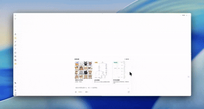

欢迎使用 Actum（开图）
Actum（开图） 是一个以浏览器为入口�?AI 应用平台，强化了模型、知识、素材与工具的协作能力�?平台�?strong>画布工作�?/strong>为运行底座，用户在同一个画布中发起 AI 生成指令、撰写知识卡、调用插件工具、管理任务队列，并通过多模型路由完成图像、视频、文本等交付。\ 这让创作者不用在多个应用间切换，就能在一个开放工作区内完成从灵感到交付的全链路�?
所有数据都存储在当前浏览器中，无需额外安装。只要打开浏览器，就能继续未完成的“项目”，因为 Actum 把画布状态、素材、提示词历史和设置都保存在本地�?
- �?数据隐私安全，完全由您掌�?/li>
- ⚠️ 换浏览器或清除浏览器数据会丢失内�?/li>
- 💡 需要迁移数据？使用 菜单 �?备份恢复 功能导出后在新浏览器导入
Actum 平台概览
Actum 将“画布工作区”定位为统一的执行与协作界面，围绕它构建以下能力�?
- AI 应用：在底部 AI 输入栏发起图片、视频、灵感板的生成请求，或通过内置 Agent/Skill 调用多模型能力；
- 知识与素�?/strong>：知识库、灵感板、素材库都与画布互联，生成的内容可一键插入工作区并被任务队列追踪�?/li>
- 工具与工作流：命令面板、技能、工具箱、工作流系统贯穿整个平台，支持多步骤执行与任务重试；
- 开放与扩展：插件架构、API 配置、同步能力让 Actum 适合作为团队或个人的高频 AI 工作空间�?/li>
产品展示
智能拆分图片
输入描述，AI 生成可拆分的图片，一键拆成九宫格，发朋友圈超方便�?
流程�?/h3>
用自然语言描述流程，AI 自动生成专业流程图�?
思维导图
输入主题，AI 帮你拓展思路，快速生成完整的思维导图�?

我能用它做什么？
AI 创作能力 🔥
- AI 生成图片 - 支持多种图片生成模型
- nano-banana-pro - 高质量生图，支持 HD/2K/4K 分辨�?- 支持文本转图片、图片参考生成、批量生�?
- AI 生成视频 - 支持多种视频生成模型
- Veo3.1 / Veo3.1 Pro - 支持首尾帧控制，多图参�?- Sora-2 / Sora-2 Pro - OpenAI 视频模型 - 支持图生视频、进度追踪、任务管�?
- 模型自由切换 - 在生成对话框中即时切换不同的 AI 模型
- 任务队列管理 - 异步任务处理，支持批量生成、任务重试、历史记录、媒体缓�?/li>
效率工具
- 知识�?/strong> - 目录 + 标签管理，支持笔记检索与导入导出
- Skill/Agent - 面向场景的技能选择与自定义工作�?/li>
- 命令面板 - 快速搜索并执行常用操作（Cmd+K�?/li>
白板与可视化
- 思维导图 - 快速整理思路，支�?Markdown 转换
- 流程�?/strong> - 绘制流程图，支持 Mermaid 语法
- 自由画笔 - 手绘涂鸦，多种画笔可�?/li>
- 形状工具 - 矩形、圆形、箭头等基础形状
- 图片插入 - 支持插入和编辑图片元�?/li>
编辑与交�?/h3>
- 丰富的编辑功�?/strong> - 撤销、重做、复制、粘贴、多选等
- 无限画布 - 自由缩放、滚动、移�?/li>
- 自动保存 - 本地浏览器自动保存，数据不丢�?/li>
- 多格式导�?/strong> - 支持 PNG、JSON(
.drawnix) 等格式导�?/li>
体验与生�?/h3>
- 完全免费 + 开�?/strong> - MIT 许可证，可商�?/li>
- 主题模式 - 支持亮色/暗色主题切换
- 移动端适配 - 完美支持移动设备使用
立即开�?/h2>
.drawnix) 等格式导�?/li>
- 完全免费 + 开�?/strong> - MIT 许可证，可商�?/li>
- 主题模式 - 支持亮色/暗色主题切换
- 移动端适配 - 完美支持移动设备使用
立即开�?/h2>
访问 Actum.ai 开始使用，无需注册账号�?
体验新功能？试试 pr.Actum.ai
快速入�?/h2>
1. 生成图片
在底部输入框输入描述（如"一只可爱的猫咪"），点击发送�?
2. 绘制思维导图
点击工具栏的思维导图图标，或�?M 键，开始创建�?
3. 自由绘画
�?P 键切换到画笔，在画布上自由绘制�?
界面介绍

- 顶部工具�?/strong> - 各种绘图工具和编辑功�?/li>
- 底部输入�?/strong> - AI 创作入口，输入描述生成图�?视频
- 右下角导�?/strong> - 缩放、重置视图等操作
- 无限画布 - 可自由拖动、缩放的创作空间
常用快捷�?/h2>
| 快捷�?/th> | 功能 |
|---|---|
H | 手形工具（拖动画布） |
V | 选择工具 |
P | 画笔工具 |
T | 文本工具 |
M | 思维导图 |
R | 矩形工具 |
O | 椭圆工具 |
Ctrl/Cmd + Z | 撤销 |
Ctrl/Cmd + Shift + Z | 重做 |
Ctrl/Cmd + S | 保存文件 |
Ctrl/Cmd + Shift + E | 导出图片 |
| 鼠标滚轮 | 缩放画布 |
数据存储说明
您的数据存储在浏览器本地，包括：
| 数据类型 | 存储位置 | 说明 |
|---|---|---|
| 项目文件 | IndexedDB | 画布内容和结�?/td> |
| 素材�?/td> | Cache Storage | 上传和生成的图片视频 |
| 提示词历�?/td> | IndexedDB | 使用过的 AI 提示�?/td> |
| 设置 | LocalStorage | API 配置�?/td> |
1. 在原浏览器打开 菜单 �?备份恢复 2. 勾选需要迁移的内容，点�?导出 3. 在新浏览器打开 Actum�?strong>导入
刚才�?ZIP 文件获取帮助
加入用户交流�?/h3>
扫码加入交流群，与其他用户交流使用心得，反馈问题和建议：

也可以点击应用右侧工具栏�?用户反馈�?/strong> 按钮查看二维码�?
问题排查
遇到问题时，可以使用 调试面板 帮助定位�?
| 环境 | 调试面板地址 |
|---|---|
| 正式环境 | https://Actum.ai/sw-debug.html |
| 体验环境 | https://pr.Actum.ai/sw-debug.html |
调试面板可以�?
- 查看 Service Worker 状态和日志
- 导出诊断日志（发给技术支持）
- 备份和恢复应用数�?/li>
- 清除缓存解决异常问题
其他方式
- 📖 阅读本手册的详细教程
- 🐛 �?GitHub Issues 提交问题
- 💬 参与 GitHub Discussions 讨论
---
爱创作，图未来�?/em>